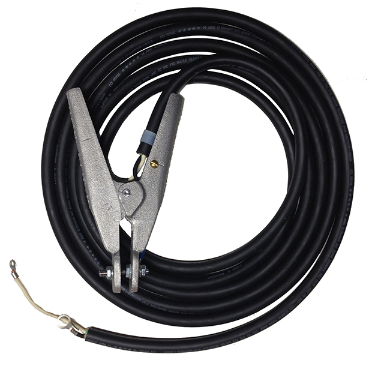

Coil Cable
Provides better cable management. Offered in 25 foot (retracts to 4 feet) and 50 foot (retracts to 8 feet) lengths. Resistant to harsh environments. (Shown with K708160A Clamp)

Ground Cables
Available in 25 foot, 35 foot, 50 foot, and 100 foot lengths. (Shown with K708160A Clamp)